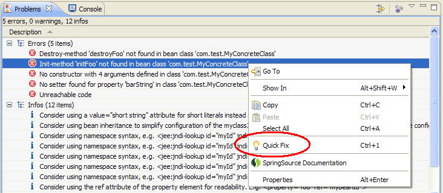
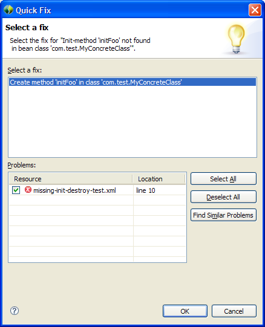
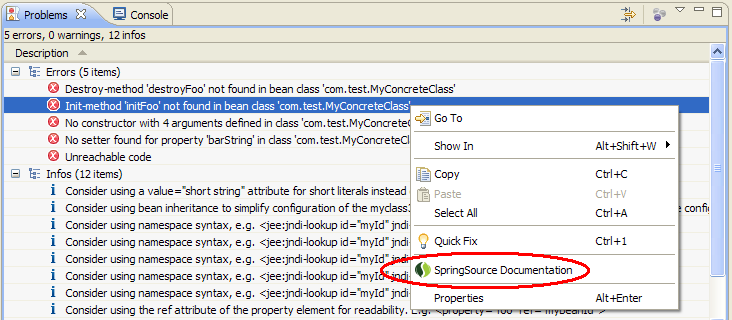

As you work, Spring problems may appear in the Problems View. Quick fixes are available to quickly resolve some common problems. Right-click on the problem in the Problems View and a menu-item with a light bulb icon will appear if a quick fix is available. Remember to save your editors before invoking the context menu.

When you click on the "Quick Fix" menu item, a dialog will appear with more information about the proposed quick fix.

In some cases it is helpful to review relevant documentation about a particular Spring error or info marker. Right-click on the Spring problem and select "SpringSource Documentation" to view documentation about the issue reported by the error or info marker. If no specific documentation is available, clicking the menu item will show the Spring Framework Reference Documentation.
